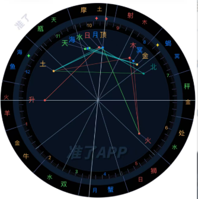
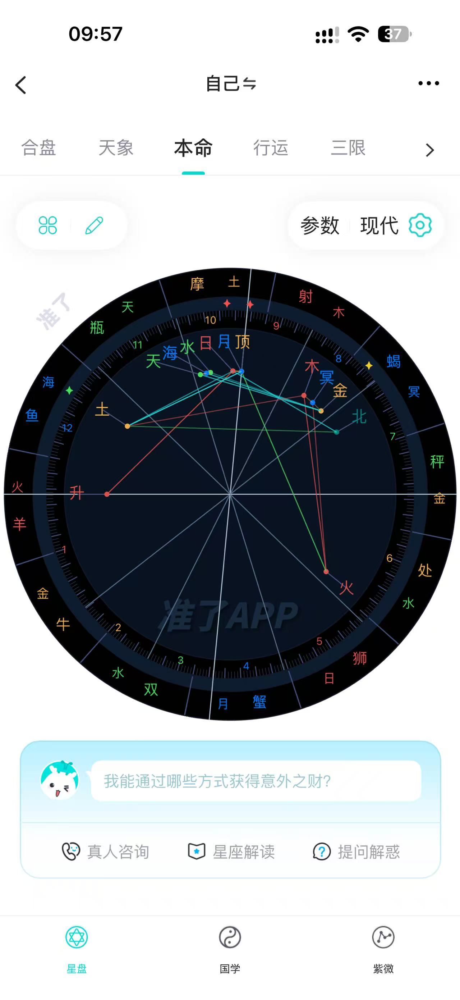
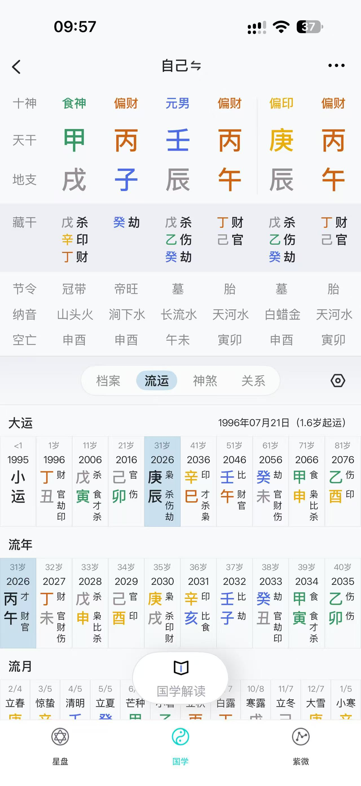

真实星盘 · 出生城市与完整档案
按用户最新授权，仅在星盘档案恢复出生城市，离线真实城市候选自动提供时区与坐标；准确生辰和实际城市生成完整个人盘，城市未知时刻取真实本地日期范围，未找到不猜。主生辰四字段、紫微/八字原规则、已有档案与功能保留。AI/托管/飞书暂停，只本地完成，未发布、未新打包。
Python与本地Cloud完整回归分别60、60项通过且均0失败；出生/三盘/交互/长度/八字专项分别8/14/15/16/12项，档案/结构/星盘守护冒烟分别10/8/7项。全部绑定本轮最终构建。
本轮八字默认实测：390×844额外滚动367px；958×676额外滚动535px。仅对应所测状态与视口，主动展开仍可滚动；缺历史同构测量不推算缩短比例。
下方旧轮验收保留历史；当前星盘城市/档案以上方W1记录为准，其他两盘继续沿用。未知不造精确盘、AI/托管/飞书暂停、未发布/未新打包。
当前执行：星盘出生城市与完整个人档案
用户最新明确允许只在星盘档案恢复出生城市，由城市自动处理时区和经纬度。本轮授权优先于此前该处城市禁令；不恢复主生辰表地域字段，不改变紫微/八字原规则。
使用固定GeoNames全球离线城市索引，候选必须实际选择，按id取真实城市坐标和IANA时区；中文/拼音/英文搜索，同名显示国家地区/省区，不猜不存在的城市。准确时间加真实城市才能生成完整个人盘，未知时间继续范围参考，不默认零点或猜宫位。
未建立星盘独立档案时保留原固定北京时间25点参考；独立城市档案未知时刻按该城市真实本地日期起止计算，常见23/24/25小时，也处理半小时等调整，以至多1小时步长加末端动态采样。当地午夜不存在则明确报错；午夜重复取最早时刻仅作为整日边界，不推定出生时刻。
| 模块 | 范围 | 门禁 | 状态 |
|---|---|---|---|
| W1 | 依最新用户授权只在星盘档案恢复出生城市，离线GeoNames候选真实选择，自动取IANA时区及坐标；准确时间与城市可算完整个人盘；独立城市未知时间取真实本地日范围，未找到不猜；其余主生辰/两盘不改。 | W1真实档案冒烟10组、S1结构烟8与星盘C1烟7、五专项及Python/本地Cloud各完整60项，全部绑定最终W1构建。 | 已通过 60项实际证据 60项实际证据 8项实际证据 14项实际证据 15项实际证据 16项实际证据 12项实际证据 10项实际证据 8项实际证据 7项实际证据 |
AI/托管/飞书继续暂停，本地实施、不发布、不打包。旧S1/C1C2/M1M5/F05 receipt与台账和旧ZIP原样保留；不把历史报告当本轮验收。
完整星盘 · 结构与连线
用户补充结构图后，仅重做Western星盘盘面结构与中间线。真实黄经、相位/旧宫制与未知全天范围算法不变；黄道结构参照不冒充宫位。保留C1/C2及M1—M5历史事实，沿用已验收八字。只本地完成，AI/托管/飞书暂停，未发布、未新打包。
Python与本地Cloud完整回归分别60、60项通过且均0失败；出生/三盘/交互/长度/八字专项分别8/14/15/16/12项，结构/星盘守护冒烟分别8/7项。全部绑定本轮最终构建。
本轮八字默认实测：390×844额外滚动367px；958×676额外滚动535px。仅对应所测状态与视口，主动展开仍可滚动；缺历史同构测量不推算缩短比例。
下方旧轮验收保留历史；当前星盘结构以上方记录为准，八字沿用C2。未知不造精确盘、AI/托管/飞书暂停、未发布/未新打包。
当前执行：完整星盘结构与连线
用户进一步指出星盘空散并补充结构图。只重做Western盘面与中间线，不改变已验收八字或计算参数；C1/C2及M1—M5旧验收事实、原receipt/台账/ZIP完整保留，星盘视觉以本轮最新反馈为准。
lunar固定1.7.7用于历法和八字，不提供西方宫位/相位API。西盘仍用Astronomy2.1.19真实位置；结构分区不能冒充无地点时的宫位或未知相位。未知全天范围、四字段生辰、AI/托管/飞书暂停边界不变。
| 模块 | 实施与验收 | 门禁 | 状态 |
|---|---|---|---|
| S1 | 依据用户补充星盘结构图完成盘面分区、标签及真实连线；黄道结构参考与真实宫位/相位明确区分，真实经度/算法/档案及未知全天范围边界不变。 | S1冒烟及Python/本地Cloud各完整60项通过；最终五专项与两套星盘烟同构建。 | 已通过 60项实际证据 60项实际证据 8项实际证据 7项实际证据 8项实际证据 14项实际证据 15项实际证据 16项实际证据 12项实际证据 |
查看用户补充结构参考图

11月11日 · 星盘与八字参考比例重做
11月11日用户两张准了参考图的星盘盘面与八字比例重做，按C1、C2分别冒烟及双端完整回归后本地完成。固定真实计算、本人资料与既有功能；旧M1—M5事实保留，其视觉由本轮反馈替代。未发布、未新打包，AI/托管/飞书继续暂缓。
Python与本地Cloud完整回归分别60、60项通过且均0失败；出生/三盘/交互/长度/八字专项分别8/14/15/16/12项，星盘/八字冒烟分别7/7项。全部绑定本轮最终构建。
本轮八字默认实测：390×844额外滚动367px；958×676额外滚动535px。仅对应所测状态与视口，主动展开仍可滚动；缺历史同构测量不推算缩短比例。
下方旧轮验收与视觉作为历史；当前效果以上方本轮记录为准。未知不造精确盘、AI/托管/飞书暂停、未发布/未新打包。
当前执行：11月11日星盘与八字参考比例重做
用户补充两张准了参考图，更新星盘和八字的盘面比例/样式要求。先C1星盘、通过后C2八字；本人真实资料与既定计算不变，不把截图示例当用户数据。旧M1—M5交付事实保留，其视觉以本次最新反馈为准。
出生仍仅生日、性别、选填称呼/时间；未知时刻不造精确紫微或八字，西盘仅真实25样本全天范围，无坐标不猜ASC/宫位。AI、托管、飞书暂缓，本轮不发布、不打完整包，旧ZIP和旧receipt原样保留。
| 顺序 | 模块 | 范围与验收边界 | 准入门禁 | 状态及证据 |
|---|---|---|---|---|
| C1 | 星盘盘面比例与样式 | 按11月11日用户星盘参考图调整真实星盘的盘面比例、层级和颜色；保留精确地心/旧完整档案和未知全天范围的数据边界、可达详情、键盘及四语。 | 先本模块冒烟，再Python与本地Cloud各完整60项；缺陷修复重跑通过后才推进。 | 已通过 60项实际证据 60项实际证据 7项实际证据 14项实际证据 |
| C2 | 八字比例与样式 | 按11月11日用户八字参考图调整六列表及流运比例；固定lunar1.7.7真实本人四柱与运年月，保留档案/流运/神煞三页、12类规则、完整详情及真实保存复算。 | 先本模块冒烟，再Python与本地Cloud各完整60项；缺陷修复重跑通过后才推进。 | 已通过 60项实际证据 60项实际证据 7项实际证据 7项实际证据 8项实际证据 14项实际证据 15项实际证据 16项实际证据 12项实际证据 |
本轮两模块台账 · 改前冻结身份 · 保留的M1—M5历史交付
查看用户本轮两张参考原图


用户改动文档 · M1—M5本地验收
用户改动文档六项要求按M1—M5完成本地实施与验收：首页卡片和三个快捷入口；三盘独立及真实地心/全天范围星盘；紫微日间白底；八字真实档案流运、十二类有依据神煞与删除关系；展开控件统一。原计算、档案、笔记、计时、三地图4/4/3及四语保留。未发布、未新打包、旧ZIP未改，AI继续暂缓。
Python 完整回归60项通过、0项失败，本地 Cloud 完整回归60项通过、0项失败；出生、三盘、交互、长度、八字专项分别8/14/15/16/12项，M5冒烟7项通过。详细批次见交付记录。
八字默认额外滚动实测：390×844为49px，958×676为217px。对照仅对应报告绑定的真实历史测量。主动展开资料仍可滚动。
未知西盘仅25样本全天范围，紫微/八字未知不造精确盘。日间视觉待评价，藏文首页允许真实滚动。本轮未发布、未新打包，旧ZIP保持原快照。
当前执行 11月10日改动文档
已逐项阅读6组正文和9张原图，按5个模块依次实施。每模块先冒烟测试，再运行Python与本地Cloud两套完整回归；修复后重跑通过才推进下一模块。历史通过记录不代替本轮验证。
AI暂缓；生日/性别必填，称呼/时间选填，不恢复地点/时区/经纬度。未知时间不造精确盘。保留三地图4/4/3、计时和四语言。托管与飞书按用户最新安排暂不处理，本轮不发布公网，旧ZIP保留原快照。
| 编号 | 模块 | 原要求与实施范围 | 验收标准 | 状态与证据 |
|---|---|---|---|---|
| D01 M1 | 首页卡片与三个快捷入口 | 删除独立的一分钟练习板块，将每日智慧卡片移到原位置 | 智慧卡片在三地图上方且只有一处；实际抽卡、回看与收藏可用。 | 已通过 60项测试证据 60项测试证据 6项测试证据 6项测试证据 |
| D02 M1 | 首页卡片与三个快捷入口 | 首页快捷入口删除智慧课程、冥想音乐 | 仅每日签到、我的收藏、成长记录三个入口，五项主导航与原有课程/音乐功能保留。 | 已通过 60项测试证据 60项测试证据 6项测试证据 6项测试证据 |
| D03 M2 | 三盘独立与真实星盘图形 | 紫微、八字、星盘各自对应入口，星盘恢复图形 | 三页无跨盘切换；保留共同生辰门槛与逐级返回。无地点时只画真实地心黄道位置；未知时间显示日期范围，不伪造ASC、MC、宫位或精确盘；旧完整档案继续复算。 | 已通过 60项测试证据 60项测试证据 10项测试证据 8项测试证据 14项测试证据 15项测试证据 16项测试证据 |
| D04 M3 | 紫微日间配色与可读性 | 紫微白天模式改纯白背景，优化字体与颜色 | 紫微页面、宫格与焦点区白底，深色正文、清晰边框和彩色标记；夜间效果保持，手机文字不重叠。 | 已通过 60项测试证据 60项测试证据 5项测试证据 |
| D05 M4 | 八字真实数据与移除关系 | 核实6tail/lunar-javascript实际计算，完善档案、流运、神煞并删除关系 | 本命及运年月依据本人保存生辰真实联动；说明字段与库API来源，不把黄历日级吉凶神当四柱神煞。神煞只收录可核查规则；移除关系页与死入口，档案/流运/神煞保留。 | 已通过 60项测试证据 60项测试证据 8项测试证据 12项测试证据 15项测试证据 |
| D06 M5 | 展开收起控件统一 | 优化展开收起详细字段等按钮的字体、符号与样式 | 使用统一文字和SVG箭头，去掉文本尖号/加号等拼凑符号；真实展开收起、键盘和触摸可用，四语不溢出，页面保持紧凑。 | 已通过 60项测试证据 60项测试证据 7项测试证据 8项测试证据 14项测试证据 15项测试证据 16项测试证据 12项测试证据 |
原始反馈文档 · 逐图原文记录 · 本轮实施及测试记录 · 本机APP
查看本轮全部原图与原文

去掉这个“一分钟，回到呼吸”的板块，然后把这个“每日智慧卡片”放到这个“一分钟........”的位置。

去除掉这里的“智慧课程”和“冥想音乐”，只保留其他三个入口，因为在首页最下面已经有“智慧馆”这些可以直达的入口了不需要这些来增加重复量

生命地图里，我的紫薇命盘里面就应该只有紫薇命盘，不应该还有四柱和星盘，每个模块都独立对应每个板块，紫薇的就应该只放紫薇，国学里面就应该只放八字排盘，星盘就应该只有星盘。还有一个问题就是星盘这个页面你调去哪里了，星盘里怎么是文字？应该是一个星盘呀

这个紫薇命盘在白天模式下，背景和字体看着很不舒服，黑夜模式下看着没问题，一旦切换到白天模式就看着很难受，要不直接调成纯白的背景吧，然后字体和字体颜色可以再优化优化


然后就是档案丶流云丶神煞的东西，我要的不是示例数据，我之前不给给过你一个github上开源的东西，你去那里面获取这些详细的数据信息，地址是“https://github.com/6tail/lunar-javascript”。还有这个把这个“关系”去掉，我们app目前用不到

6.还有我发现这些类似的展开收起详细字段的按钮，样式和字体还有符号做的儿戏了，一看这就非常垃圾，抓紧优化
当前推进方向：先做好基本框架（2026-11-09更新）
用户最新要求：AI暂时不接入，先把基本框架做好，再逐步完善其余功能。本区块为当前实施顺序；下方旧排期与历史验收保留追溯。AI问答、AI初审、模型和知识库接入暂缓，内容继续通过人工审核；现有AI页面及预留接口保留真实未接入状态。
基础框架沿用当前APP、创作者中心与公司后台。现有首页、三地图4/4/3功能框、逐级返回、自动累计计时及四语言保持。生命地图必须先保存生辰，生日/性别必填，称呼/时间选填；不增加出生地、时区或经纬度输入。有准确时间保存即自动生成紫微，未知时间不造盘。
| 顺序 | 范围 | 现有基础 | 完成标准 | 当前状态 |
|---|---|---|---|---|
| F01 | 主流程与页面状态 | 首页、三地图、课程、社群、我的及现有子页与返回。 | 逐项对照APP入口、实际接口和结果；主要流程可进入、操作、保存和回看。加载、空数据、未登录、失败重试清楚，四语无阻塞，不新增栏目。 | 已通过：两端完整各60项、连接恢复专项各14项；Netlify前台待同步 |
| F02 | 账号权限与数据保存 | 已有登录、角色权限、作品与服务端收藏隔离；生辰、排盘和部分笔记仅当前浏览器按账号保存。 | 列清每类数据的存储位置；匿名及双账号检查不越权、不串数据；保存失败有明确状态和可操作恢复路径，区分本机保存与后台同步，不误报成功。 | 已通过：双端完整各60项、账号各14项、真实媒体各4项及连接复验各14项；Netlify前台待同步 |
| F03 | APP—创作者—公司后台 | 已有视频/图文/课程草稿、人工审核、发布、撤回、申诉及APP收藏/学习/作者/咨询回流。 | 保留成熟创作者结构；每个保留功能都有真实APP入口或管理用途；草稿不可公开，通过后可见，撤回/停用后不可见，素材与编辑权限正确。AI暂缓不影响人工处理。 | 已通过：本轮双端完整各60项、创作者恢复与真实联调各15项；Netlify前台待同步 |
| F04 | 公司后台数据中心 | 已有日/自然周/月/年活跃、趋势、新增、功能使用、成熟留存与汇总CSV。 | 复核北京时间、账号区间去重、采集起点和权限；未采集及未成熟样本保持真实空值；导出限汇总，不重复开发已有统计或继续堆指标。 | 已通过：本轮双端完整各60项、后台恢复各17项、数据中心联调各7项；Netlify前台待同步 |
| F05 | 接口与可复现交付 | 已有Python/SQLite、Worker/D1/R2适配、构建、隔离回归和备份。 | 现有两端核心字段、权限、错误处理与存储边界一致；隔离环境能启动、构建和复验；恢复验证不覆盖原资料。每个业务模块通过本轮完整回归与专项后再推进。 | 已通过：隔离SQLite与本地D1恢复、实际HTTP/权限及双端契约共4组；Netlify前台待同步 |
后续逐步完成：基础通过后再安排实际课程与老师内容、播放续看、性能与真机体验、语言审校，以及需要外部条件的服务。完整跨设备同步、断网自动补传和冲突合并单独安排；本阶段不将其写作已完成，也不自动上传本地出生资料。AI接入等用户以后重新明确安排。
11月3日：动态课程分类、认证老师推荐与视频适配
本地开发与验证完成：两套完整回归各56项通过。公网发布工具暂不可用，线上尚未替换。
- 智慧馆恢复图文全部课程列表：本地已实施并验证，待公网发布。
- 后台动态课程分类CRUD和课程多分类关联：本地已实施并验证，待公网发布。
- 初始有声书与视频教程分类及一次性迁移：本地已实施并验证，待公网发布。
- 社群四入口及老师推荐：本地已实施并验证，待公网发布。
- 真实认证推荐老师资料与咨询需求流程：本地已实施并验证，待公网发布。
- 竖屏方形横屏自适应和透明导航：本地已实施并验证，待公网发布。
- 保留自动播放暂停静音进度和左下标题：本地已实施并验证，待公网发布。
- 四语及完整回归：本地已实施并验证，待公网发布。
东方智慧APP大改任务表
本轮围绕更短的操作路径、更精简的表达和更有科技感的体验，重组首页与三大地图，重做抽卡、签到和全局计时，并同步准备自主发布社群及统一管理后台。
依据为 1016问题反馈原文 中的 6 张截图、7 条修改说明，以及用户本轮补充文字和首页红框截图。图与说明已逐一配对；文档不存在另行批注或修订文字。本表中的布局做法和接口方案属于落实要求的建议，验收时以明确需求为准。
本轮需求理解
- 首页在五项快捷功能行结束。每日一句、三大地图、每日抽卡及“每日签到／智慧课程／冥想音乐／我的收藏／成长记录”保留；这行之后不再堆叠每日冥想、时间轴和自评卡片。底部导航与全局计时浮层继续保留。
- “下拉太多”按页面纵向滚动过长处理。功能入口和核心操作尽量在首屏完成，正文按需展开；同时减少嵌套层级。课程、社群动态和聊天记录仍保留必要的内容浏览。
- 三大地图变成直接可用的功能面板。精简宣言、说明及大卡片，保留认识自己、修复自己、提升自己的方向；每个地图都预留检测设备、运动手环等数据接口。
- 科技感以清晰的组件、动态状态和细节实现。建议保留东方文化定位，调整字体、间距、图形、光效、图标及动效。具体色彩和视觉样式在视觉阶段给出实际页面效果。
- 抽卡进入后自动滚动。用户点击中心图片时停住，锁定当时位于中心的卡片，再显示结果与简短解读；用户的点停必须与实际滚轮位置对应。
- 文档中的功能改动全部纳入。老师和用户自主发布内容、发布审核、简化 AI 问答、钟声签到、紧凑音乐页、自动累计且不可手动暂停的全局计时，以及完整后台准备。
本轮要求优先替代旧版中“首页保留所有下方区块”“服务页先选功能”“全局计时可以手动暂停”的做法。精简页面同时保留原有记录与合理入口。
分模块实施任务
编号用于逐项验收，来源用于追溯。本轮已实施，实际状态以每行标记及最新回归记录为准。最新全量回归：56组通过，0组失败；另含5项后台单元检查。
| 编号 | 模块 | 具体改动 | 验收标准 | 来源与状态 |
|---|---|---|---|---|
| P01 | 全局页面结构 | 五个底部入口采用稳定固定导航；三大地图为紧凑的两行四项操作，以边框与底色突出主要入口；智慧馆采用紧凑课程列表，个人页偏好设置按需展开且调整后保持展开。 | 主要操作在常见手机首屏内可见；首页仍在五项快捷功能处结束；全部功能与记录入口保留；偏好设置收起后切页返回仍保持收起；适配字号、触控空间和底部安全区。 | 用户补充；图2、图5 已实现，通过本地回归 |
| P02 | 全局文案 | 重写标题、副标题、功能说明和结果摘要，优先使用直接的动作词；主界面精简为功能名、必要的一句说明和操作。 | 三大地图及主要功能首屏无连续长段解释；必要的文化资料、数据说明和详细内容按需查看；用户能直接理解下一步动作。 | 用户补充 已实现，通过本地回归 |
| P03 | 整体视觉 | 课程列表已支持左图右文，后台课程封面上传及缺图/加载失败回退。智慧馆三分类已统一为认识自己、修复自己、提升自己，并同步课程标签、筛选与后台选项。2026-10-29首页每日一句区域支持运营轮播，7秒自动切换、手势/圆点/键盘、暂停及后台配置跳转，固定保留练习入口。2026-10-28 按负责人优化建议实施真实体验闭环：自评到有依据的练习、离页继续、练后反馈影响下次推荐、成长分类回看；三图按档案探索/评估行动/即刻静心区分。课程可填出处且保留本机查看入口，卡片可自愿加入今日安排并单独标明完成；2026-10-29依负责人要求，AI页收为对话框和简短提示，移除推荐卡及规则练习区。用户选择玄流方向试做。实际APP已采用深墨暖金、强化山脊流光及触摸涟漪、并列地图入口及统一五个主页面、地图与练习体验；保持原有业务与首页结束范围。默认夜间且后续主动外观选择可保存；场景尊重减少动态效果并在离页/隐藏时停止。旧版有回退存档。试做待用户评价，功能回归不等于视觉已获最终认可。 | 实际源码及构建页面同步；默认界面无星球与轨道；实际小字、操作按钮与主题颜色对比合格；后台自定义封面可见且文字仍清晰；手机三种视口无横向溢出，核心入口和所有既有功能通过本轮完整回归。 | 用户补充；后续强调科技感与突破旧版 已实现，通过本地回归 |
| H01 | 首页收尾 | 首页内容严格收在五项快捷功能行：每日签到、智慧课程、冥想音乐、我的收藏、成长记录；清除该行之后的首页内容区块与多余留白。 | 快捷功能行是首页最后一块内容；往下滚动不再出现每日冥想、时间轴、自评卡片或附加文案；底部导航和计时浮层正常使用。 | 用户补充及红框图 已实现，通过本地回归 |
| H02 | 功能入口归位 | 将首页移出内容归入对应模块。建议：冥想与情绪觉察归心智地图，身体感受归身体地图，每日时间轴归我的档案；保留已有数据与返回路径。 | 首页缩短后，冥想、时间安排、自评及历史记录仍可从明确入口打开；菜单命名一致、无失效入口，原有记录可回看。 | 用户补充；入口位置为实施建议 已实现，通过本地回归 |
| M01 | 生命地图 | 把天赋特质、人生课题、紫微文化及命盘组织为紧凑入口或页内切换；压缩地图引言、功能介绍与重复记录入口。 | 认识自己相关主要功能首屏可见；进入后直接完成选择或填写；命盘与结果区域按需切换，文化长文进入详情。 | 图2；用户补充 已实现，通过本地回归 |
| M02 | 身体地图 | 整合身心自评、检测数据、睡眠压力和导引练习入口；自评用紧凑选项完成，结果显示简短摘要及可执行动作。 | 核心评估与练习入口首屏可见；数据来源能区分自评与设备；没有设备时呈现未连接状态；记录保存与回看保持可用。 | 图2；用户补充 已实现，通过本地回归 |
| M03 | 心智地图 | 精简禅修、情绪觉察及课程入口；缩短练习说明，把开始练习、情绪选择和记录操作放在清晰位置。 | 首屏能找到练习、觉察和修习课程；短练习与情绪记录减少跳转；详细课程正文保留到内容阅读状态。 | 图2；用户补充 已实现，通过本地回归 |
| M04 | 三大地图设备接口 | 为三个地图分别预留检测设备、运动手环等 API 接口及数据适配层，明确账号、设备、指标、测量时间、单位、来源和授权状态。 | 三个地图均能接入统一设备数据结构；连接、授权、加载、空数据和错误状态齐全；接口契约与实际设备联调分别记录。 | 图2 已实现，待真实设备联调 |
| A01 | AI服务页面 | 底部“服务”和相关入口统一为“AI服务”，点击后直接进入问答界面；缩减大标题、介绍卡与功能选择页。 | 打开即看到对话区和输入框；发送、等待、回答、错误及重试流程清楚；如保留报告解析，以对话中的上下文操作承接。 | 图3 已实现，通过本地回归 |
| A02 | AI问答接入 | 准备前端消息接口、服务端 AI 供应商适配、后台模型与知识配置；梳理旧预设帮助库向真实问答服务的接入方式。 | 未配置供应商时状态真实明确；凭据由服务端管理；配置后可完成问答及失败重试；接入完成与本地示例分别验收。 | 图3；文档末尾后台要求 预留框架已实现；真实AI接入按当前方向暂缓 |
| C01 | 特色签到 | 重做签到第一画面，以钟或铃作为主要交互；用户点击后播放山寺铜钟或小铃声，配合简洁视觉反馈及当天签到状态。 | 进入页面即可理解并完成签到；点击有声音和可见反馈；同日重复点击不重复记账；静音状态也能完成并确认签到。 | 图4 已实现，通过本地回归 |
| Y01 | 冥想音乐 | 压缩音乐页大标题、说明和大封面，采用紧凑曲目选择及集中播放区，减少反复下拉寻找曲目或控件。 | 首屏可选曲并播放；播放、暂停、切换、音量、定时及收藏易于触达；播放中切页的状态一致。 | 图5 已实现，通过本地回归 |
| D01 | 抽卡自动滚轮 | 未抽取当天进入抽卡页后自动持续翻滚卡片，展示明确的中心选取区域及“轻触定格”提示，替换手动开始流程。 | 页面进入即开始滚动；无额外开始按钮；滚动连续、中心卡片可辨认；离开页面时释放动画资源。 | 用户补充 已实现，通过本地回归 |
| D02 | 抽卡中心点停 | 将中心图片设为直接点停目标；点击时停止滚轮，锁定当时居中的卡片，再翻面展示结果；防止重复触发。 | 点停时看到的中心卡片与最终结果一致；停止后不再另抽另一张结果；移动端点击与键盘操作均能触发相同行为。 | 用户补充 已实现，通过本地回归 |
| D03 | 抽卡结果 | 精简卡片结果为卡面、简短解读和一个可执行建议，保留收藏与当日回看；梳理卡池及解读内容的后台配置。 | 结果核心信息尽量同屏展示；抽卡记录稳定；本轮暂沿用现有每天一张与当日回看规则，真实 AI 解读随 A02 接入验收。 | 用户补充；文档末尾后台要求 已实现，通过本地回归 |
| T01 | 自动累计计时 | 打开 APP 自动累计全局使用时长；删除用户可操作的开始、暂停及恢复累计按钮，并同步调整后台接口、历史状态迁移和说明。 | 进入即计时；页面与设置均不能手动暂停累计；隐藏和切换模块持续累计；刷新不会重复创建计时段；接口规则与前台一致。 | 图6 已实现，通过本地回归 |
| T02 | 计时浮层 | 轻点切换长条与小正方形，两种形态均持续显示完整时分秒；整块跟手拖动，松手平滑磁吸最近的左右屏幕边缘，保留高度；保存贴边方向、形态与高度，保留隐藏与恢复。 | 小方块时间清晰且每秒更新；拖动跟手，松手自动贴边且不误触切换；轻点缩放、刷新及切页保持贴边方向和形态；动画中可以再次拖动，屏幕变化后不越界；收起、拖动和隐藏均不影响累计。 | 图6；用户后续补充 已实现，通过本地回归 |
| T03 | 计时记录与口径 | 精简今日和总累计展示，明细按需查看；明确关闭 APP、后台停留、断网重开、跨天及多端的结算口径，并对接后台账本。 | 累计可追溯且不重复；异常退出可恢复；全局累计、练习时长与音乐时长各自清楚。实施前记录未明确的生命周期口径。 | 图6；文档末尾后台要求 已实现，通过本地回归 |
| S01 | 社群自主发布 | 将社群改为内容发布与浏览板块，老师及用户可自行发布相关视频切片、教学内容和动态；提供发布入口、作者身份和个人内容管理。 | 可完成素材选择、填写、预览、提交和查看状态；发布者可管理自己的内容；社群首屏能看到内容及发布入口。 | 图1 已实现，通过本地回归 |
| S02 | 内容审核 | 设计并实现草稿、待审核、通过、驳回、下架流程，联动后台审核、反馈及操作记录。 | 提交后进入待审核，审核通过才进入公开内容流；驳回可看到原因并修改；下架后前台同步；普通用户无法操作审核权限。 | 图1 已实现，通过本地回归 |
| S03 | 社群原有功能 | 保留老师一对一、我的好友、我的对话、分享与动态等既有功能，重新组织为紧凑且可见的入口，接入对应后台数据。 | 原功能无遗漏，内容发布后作者、分享和交流路径清楚；真实联网功能与本地草稿状态区分；老师服务需求可管理。 | 图1 已实现，通过本地回归 |
| B01 | 后台配置清单 | 逐项梳理固定在代码中的内容、后台可配置内容及系统自动生成数据，定义数据模型、权限、校验和发布范围。 | 首页、地图、AI、签到、音乐、抽卡、课程、社群、老师、会员、计时及设备均有归属；运营调整内容无需修改源码。 | 文档末尾后台要求 已实现，通过本地回归 |
| B02 | 内容与运营后台 | 统一管理后台覆盖每日一句、地图、卡池、课程、音乐、老师、会员权益、社群审核及素材上传预览；支持关键词/编号查找、状态筛选、排序、草稿、发布、归档及历史恢复。2026-10-28运营收尾已实现。 | 可新增、修改、排序、发布及下架；素材上传与引用有效；重启后数据仍在；发布结果能被 APP 获取；关键操作留有记录。 | 文档末尾后台要求；图1 已实现，通过本地回归 |
| B03 | 账号与业务管理后台 | 管理员、运营、审核员、老师和学员权限实际隔离；管理账号角色、老师服务需求、签到与计时。记录显示总数，完整JSON/CSV导出不受最近500条列表限制；不导出自评与对话正文。 | 角色权限实际生效；用户发布与运营审核分工明确；计时和签到原始记录可查询与导出；业务记录不被当作普通文案随意编辑。 | 文档末尾后台要求 已实现，通过本地回归 |
| B04 | AI及设备配置后台 | 准备 AI 供应商、模型、提示词、知识内容、设备供应商和字段映射等配置；将密钥和连接凭据放在服务端管理。 | 前台不包含密钥；支持配置校验、连接状态和必要的错误记录；缺少凭据或设备时显示实际状态；与 A02、M04 联调。 | 文档末尾后台要求；图2、图3 配置框架已实现；AI部分暂缓，设备待真实联调 |
| Q01 | 体验与功能验收 | 按本表逐项回归首页收尾、滚动长度、三图操作、文案、科技感、钟声签到、滚轮点停、不可暂停累计、发布审核和后台联动。 | 逐条记录结果及证据；常见手机尺寸下字号、控件、浮层和输入法布局可用；已有收藏、记录与主要入口持续可用。 | 全部要求 已实现，通过本地回归 |
| Q02 | 构建与交付一致 | 先修正构建脚本的输出位置，直接更新现有“03_当前APP”中的可打开页面；同步源码、说明和受影响的校验清单。需要打包时直接收录当前目录。 项目根目录已整体移至D盘第一层并按北京时间命名，原有两层空包装移入可恢复回收站；后续不得重建旧路径。 | 源码与实际查看页面均包含改动；不新建 output 项目树或版本套娃目录；只在完成实际修改及验证后按北京时间给现有根目录改名。 搬移后182个原文件逐一校验一致、数据库各表记录数一致；新路径构建、运行入口、相对链接及完整回归全部通过。 | 用户既定目录与交付规则 已实现，通过本地回归 |
哪些内容写在代码里 哪些内容由后台修改
当前已实现Python、SQLite与统一管理页面：内容发布及版本恢复、账号角色、社群审核、业务记录、AI与设备配置均通过本地接口联通APP。默认内容用于首次初始化，之后后台修改不会被重启覆盖。下表区分固定交互、运营配置和系统记录；真实AI与设备仍需联调。
| 模块 | 代码固定的逻辑 | 后台可管理的内容 | 系统生成及管理边界 |
|---|---|---|---|
| 导航与首页 | 路由、组件、五项快捷入口及首页结束位置 | 每日一句、图文素材、允许配置的短文案与显示顺序 | 后台配置遵守首页收尾约束，发布前校验 |
| 三大地图 | 功能组件、表单逻辑、命盘算法和数据适配规则 | 精简介绍、内容条目、练习推荐、设备供应商与字段映射 | 评估和设备记录附来源与时间，按权限查询 |
| 抽卡 | 自动滚动、中心点停、结果锁定、重复提交处理 | 卡片图片、名称、短解读、行动建议、卡池启停 | 抽卡结果与时间由系统记录，确保与点停画面对应 |
| 签到 | 点击签到、声音触发、同日去重和结果反馈 | 钟声或铃声素材、短文案、相关显示配置 | 签到日期及记录由系统生成 |
| 音乐与课程 | 播放器、学习和收藏交互、权限判断 | 音视频文件、封面、分类、介绍、章节及会员可见性 | 实际播放及学习记录单独累计 |
| AI服务 | 聊天界面、请求协议、失败处理和上下文授权 | 供应商、模型、提示词、知识内容及服务端凭据 | 对话记录按权限处理，前台只获取必要内容 |
| 社群内容 | 上传发布、浏览、分享及审核状态流转规则 | 审核、反馈、分类、公开状态与下架操作 | 老师和用户自行创作，审核与发布记录可追溯 |
| 老师与交流 | 服务需求、好友、会话及身份权限逻辑 | 老师资料、服务方向、开放安排及需求处理状态 | 私人对话与普通运营内容分权管理 |
| 会员及用户 | 登录、授权及权益校验机制 | 会员套餐、价格、权益说明及角色资料 | 会员生效与支付联调单独记录实际状态 |
| 计时记录 | 自动累计、隐藏继续、拖动、跨天及去重规则 | 查询条件、统计展示及导出权限 | 累计账本自动生成；普通用户无暂停入口 |
| 系统管理 | 鉴权、数据校验和发布机制 | 运营账号、角色权限、配置版本与发布回退 | 审核、发布及管理操作保留审计记录 |
建议实施顺序
- 先定结构与基础。P01–P03、B01，并先落实 Q02 的构建输出位置；同时明确后台数据结构、计时口径及抽卡状态。
- 先做最影响体验的首页和三大地图。H01–H02、M01–M04，压缩长度与文字，给出统一视觉效果。
- 逐个重做核心交互。A01–A02、C01、Y01、D01–D03、T01–T03；对应后台接口随模块一起准备。
- 完成社群与统一后台。S01–S03、B02–B04，联通自主发布、审核、内容管理及真实数据持久化。
- 统一验收和交付。Q01–Q02，逐项比对原始要求，核对源码与查看页面后，按实际北京时间处理目录名及需要的交付包。
文档逐图原文核对
以下完整保留 7 条修改说明，6 张图按文档顺序对应。第 4 张图在 Word 中与上一条 AI 服务说明处于同一段落，按其签到画面及后一条签到说明配对。
图1 社群自主发布与原功能保留 对应 S01–S03

落实为老师和用户自主发布、后台审核及既有社群功能保留。此处“去中心化”按文档给出的自主发布含义执行。
图2 三大地图减少滚动与设备接口 对应 M01–M04

图3 AI服务直接问答与页面精简 对应 A01–A02

图4 钟声或铃声签到与第一画面修改 对应 C01

图5 冥想音乐等功能减少滚动 对应 Y01、P01

图6 自动计时 禁止手动暂停 可隐藏和自由拖动 对应 T01–T03

文档末尾 完整后台及配置边界 对应 B01–B04
原文：最后，我们现在需要准备一个大后台，哪些模块是写死在代码里，哪些模块可以在后台修改，这些要准备出来，后台功能也同步准备
补充截图 首页在五项快捷功能行结束 对应 H01–H02

实施口径与所需资料
- 本轮已实施并更新APP源码与实际页面；每完成一个模块运行全量回归，失败先修复再重跑。真实AI及设备另行联调。
- 设备与 AI 接口。当前未指定设备品牌、SDK、正式检测数据和 AI 供应商凭据；先把适配接口、授权状态及后台配置纳入实现，收到实际资料后进行对应联调。
- 计时边界：打开自动累计、不可手动暂停、隐藏继续。长条和小正方形均显示完整时分秒，轻点切换；拖动时跟手，松手平滑吸附最近的左右屏幕边缘，保留高度和形态，拖动不会误触切换。通过心跳在超过45秒断连时结算旧会话，多窗口去重；移动端系统后台限制仍待实机验证。
- 签到与音乐。钟声／铃声是签到反馈；全局累计计时规则适用于陪伴计时，音乐及练习播放器继续拥有各自正常的播放控制。
- 后台与内容：本地账号、素材存储、内容管理及审核已实现。真实课程媒体、老师资料、正式支付和上线环境仍需配置与验收；本地接口通过不能替代正式服务验收。
- 目录纪律。所有实现、素材、文档和交付物均保存于当前根目录及现有子目录。沿用并修改现有文件，不新增版本包装目录，不把项目复制到其他位置。
实现时对应的现有代码位置
首页：04_研发源码/app/r4/homepage.js 与 homepage.css
三大地图：gateway.js、life.js、body.js、mind.js 及对应样式
抽卡与签到：daily.js 与 daily.css
音乐：music.js 与 music.css
AI与社群：service-social.js 与 service-social.css
计时：time-bank.js、time-bank.css、backend/server.py 及后台管理页面
通用样式与状态：base.js、base.css、app.js、app.css
构建及实际查看页面：build.py → 当前根目录下已有 03_当前APP
说明、验证与清单：已有 05_后台与研发说明、06_验证与后续工作 及根目录清单
APP功能框参考版式（2026-11-04）
已先备份并核验927个文件，再按用户图重排首页、生命/身体/心智地图、我的及对应详情。保留实际数据和现有交互，不复制插画或示例数字。
本机/本地Cloudflare完整回归各56通过，布局本机/公网只读专项各8通过；历史失败记录保留，视觉仍待用户评价。
三大地图精确入口（2026-11-04）
已按用户三张独立图逐字调整名称说明，生命/身体各4入口，心智3入口，图外设备行、小导航、状态和额外CTA从地图页移除。插画不复制。
本机/本地Cloudflare完整回归各56通过，精确入口与记录本机9、公网只读8通过。星盘计算未接入；四类新笔记仅浏览器本地按账号记录，未云同步。正式AI、设备与支付边界保持原状态。
三套实际排盘（2026-11-05）
已发布：我的紫微命盘真实十二宫；国学智慧四柱八字、起运、大运、流年、流月；星盘探索实际行星、ASC/MC、整宫/等宫、相位和可点击圆盘。保留本人原笔记、地图4/4/3版式、上方玄金和逐级返回。
当前三盘档案仅浏览器本机按账号存储，最多20份并可重算、导出；不自动解读或生成预测。较早章节“未接入八字/星盘”属于历史状态。
本机/本地Cloudflare完整回归各56，计算样例45，三盘14、原地图9、返回12；公网三盘11、原地图8、返回11通过，含四语日夜与窄屏。改前1046文件已校验备份。
国学智慧体验深化（2026-11-05）
已发布：当前节令年月与回看、七列本命/运年月对照、25项术语解释、胎元胎息与八字命身宫及纳音、小运。保留地图4/4/3框架、玄金标题背景、逐级返回与自动计时。
四模块逐轮完整回归后推进；最终本机/本地Cloudflare各60项、独立stage4四组、三盘本机14/公网11、新八字公网四组及四入口构建一致。M3手选区间误用今天的真实问题已修复并增加断言。具体批次、截图、历史失败与最终构建见交付记录。
25词条指10基础术语+10具体十神+5辅助术语（M3历史20词保留）；辅助值不作受孕日期或健康判断，不生成运势、人格、喜用神结论。档案仅当前浏览器按账号保存，藏语待母语审校，未作实机或解释体系有效性认证。
创作者APP功能对齐、数据中心与生命入口（2026-11-05）
已发布：成熟创作者工作台及12类真实数据与APP收藏/课程学习/作者/咨询联调；公司后台日周月年活跃、趋势、功能使用、成熟留存及汇总导出。生命地图强制保存共享出生资料，准确时间保存即生成紫微，时间未知不猜时辰、不造盘。
各模块逐轮整套回归通过后推进；最终本机60项、本地Cloudflare 60项和本轮专项、公网只读检查通过。统计从启用起采集，不补造历史活跃；账号去重，匿名和公司管理操作不计活跃。
生辰地域字段移除（2026-11-06）
已按用户要求去掉出生地、城市、时区、经纬度输入与城市设置入口。保留生日、性别与选填称呼/时间；准确时间仍自动实际排紫微，未知时间不猜盘。内部计算参考与旧档案边界见当前说明。
本轮本机60项/本地Cloudflare 60项完整回归、出生双端与三盘真实专项、五入口公网当前源码核验通过；早先字段说明仅作历史记录。